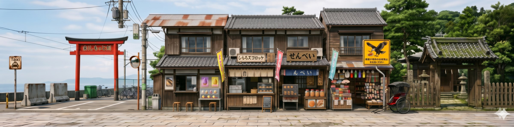
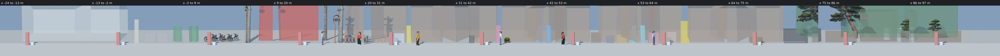
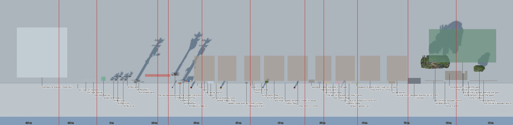

The third leg of route 1, from Kamakura Station's east exit (where KM1-2's tram ride ends) up Komachi-dori to the shrine's side gate, laid out from your KM1-3 picture. This is the layout before any level code is written: approve it, or tell me what to move, and its set pieces are built next.
About 95 m of street from the exit's door to the gate. The picture's ensemble is about 34 m wide, so it is spread along the street in the order of the five lane pictures (KM1-3a to e), about 20 m each, with the play between them.
Most of this leg is still to come, so most of it is see-through boxes. The kit already has the bicycles, the poles, the mirror, the street lamp, the bins, a planter and the pines. The gateway, the four shops, the side gate and the props in front of the shops are built next from your picture, as the home was. The shops between them come from the lane pictures.

Each model at its real size and place, seen through the game camera as the game frames it, the play lane at the front. See-through boxes are what is still to come. The sightseers are the game's grown-up passers-by at their height. The shading is Blender's, not the game's toon look: judge the places, sizes, order and gaps.


| x (m) | What happens |
|---|---|
| -12 | start: out of Kamakura Station's east exit (the stop KM1-2's tram ride ended at) |
| -3 | pigeons on the station square (KM-N07, GroundBird): they burst up as the ball comes |
| 12 | past the red gateway into Komachi-dori: the sightseers start |
| 14 | sightseers, dense, both ways, some stopping at the shops, to x 62 (the game's passers-by, Pedestrian): get through without the ball touching one |
| 22 | sparrows under the soft-serve stand's stools (KM-N08, GroundBird) |
| 34 | coins over the croquette shop's chalkboard and stools |
| 46 | a delivery's crates on the paving by the gap (CrateStack): hop over |
| 51 | a calico cat asleep on the rice-cracker shop's step (KM-N21) |
| 59 | the black kite (KM-N05) dives at the kid past the kite sign, to x 66 (the Seagull dive: duck or time it), the Animals kit's gull until the kite is in the game |
| 71 | the rickshaw (KM-V04) pulls out by the pickle shop and goes on ahead at a walk, filling the lane: stay behind it until it turns off at the gate (a slow moving obstacle) |
| 82 | the shrine's side gate: the stop (the leg ends; KM1-4 goes on up the street to school) |
| x (m) | Model | Why there |
|---|---|---|
| 1.0 | KmBicycle | the bicycles parked on the square (KM1-3, KM-A27's rack) |
| 2.0 | KmBicycle | the second bicycle, further back |
| 3.3 | KmBicycle | the third |
| 4.3 | KmBicycle | the fourth |
| 6.4 | KmPolePlain | a plain pole with a street lamp (KM-A26) |
| 7.0 | KmStreetLamp | the street lamp on it |
| 15.6 | KmPoleTransformer | the pole with its transformers, behind (KM1-3) |
| 16.8 | KmMirror | the convex mirror on its orange pole at the corner |
| 17.6 | KmPolePlain | the concrete pole with its signs |
| 18.9 | KmRecyclingBins | the bins at the corner (KM-A20) |
| 37.4 | KmShrubPlanter | a planter at the tea shop's door |
| 77.5 | KmBlackPine | the big pine over the fence (KM1-3) |
| 88.0 | KmGardenPine | a pine inside the fence |
| -16.0 | (to come) | Kamakura Station's east exit (KM1-3a; the stop the leg starts from: the kid comes out of its door at -12) |
| -7.5 | (to come) | taxi sign on its post (KM1-3) |
| -5.6 | (to come) | concrete barrier (KM1-3) |
| -3.8 | (to come) | concrete barrier (KM1-3) |
| -1.4 | (to come) | green phone box (KM-A21) |
| 11.5 | (to come) | the red gateway over the street's entrance (KM-B08), face-on behind the lane |
| 21.0 | (to come) | stool (KM-A32) |
| 21.9 | (to come) | stool (KM-A32) |
| 22.6 | (to come) | soft-serve stand (KM-B11, first of two): rusty corrugated roof |
| 23.4 | (to come) | stool (KM-A32) |
| 24.1 | (to come) | soft-serve display case |
| 25.4 | (to come) | yellow nobori flag (KM-A31) |
| 28.0 | (to come) | sweets shop with its noren curtain (KM1-3b) |
| 32.6 | (to come) | chalkboard menu (KM-A32) |
| 33.6 | (to come) | stool (KM-A32) |
| 34.0 | (to come) | croquette shop (KM-B09) |
| 34.4 | (to come) | stool (KM-A32) |
| 36.2 | (to come) | pink nobori flag (KM-A31) |
| 39.2 | (to come) | tea shop, paper lanterns under its eaves (KM1-3c) |
| 41.8 | (to come) | nobori flag (KM-A31) |
| 44.8 | (to come) | shop front to come (KM1-3c) |
| 48.1 | (to come) | wooden crates stacked in the gap (KM-A34) |
| 50.0 | (to come) | the cracker grill |
| 50.9 | (to come) | rice-cracker shop (KM-B10): its "senbei" board |
| 51.6 | (to come) | the jars of crackers on their stand |
| 53.2 | (to come) | teal nobori flag (KM-A31) |
| 54.6 | (to come) | souvenir rack of chopsticks and fans (KM-A33) |
| 56.1 | (to come) | souvenir shop (KM-B11, second of two): gabled, rusty tin over its door |
| 57.0 | (to come) | hanging goods rack (KM-A33) |
| 58.8 | (to come) | "beware of black kites" sign on its post (KM-A30) |
| 62.0 | (to come) | shop front to come (KM1-3d): the street's last shop |
| 67.2 | (to come) | pickle barrels |
| 68.4 | (to come) | pickle shop, wooden barrels at its front (KM1-3e) |
| 72.5 | (to come) | rickshaw (KM-V04): black hood, red seat |
| 77.2 | (to come) | the shrine's wooden fence (KM1-3) |
| 79.8 | (to come) | stone marker (KM1-3) |
| 80.9 | (to come) | stone lantern inside the gate (KM1-3) |
| 82.5 | (to come) | the shrine's side gate (KM-B12): moss on its tiled roof; the stop |
| 84.0 | (to come) | the shrine's woods behind the gate (trees of the plants kit) |
| 84.2 | (to come) | stone lantern inside the gate (KM1-3) |
| 85.4 | (to come) | stone marker (KM1-3) |
| 89.0 | (to come) | the shrine's wooden fence (KM1-3) |